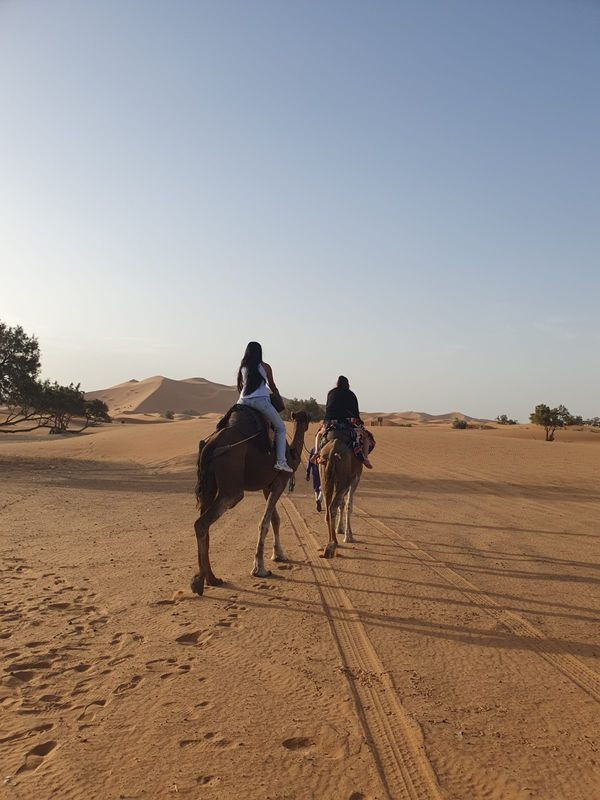
DOBRODRUHA
Шукачі пригод, а не туристи.
Марокко таке, яким воно є насправді
Пʼятнадцять днів малої експедиції: ночуємо в мединах, їмо там, де їдять місцеві, серфимо на Атлантиці, шукаємо трилобітів і спимо під зорями в Сахарі. Двоє чеських гідів беруть на себе мову, план і безпеку.
ЗАВДАТОК 25 000 CZK · ДО 20. 9. ПОВЕРТАЄМО ПОВНІСТЮ, БЕЗ ЗАЙВИХ ПИТАНЬ
Учасники, з якими ми знайомимося заздалегідь
ЗБИРАЄМО ГРУПУ ТАК, ЩОБ ЛЮДИ ЗІЙШЛИСЯЗавдаток повертаємо до 20. 9. 2026
У ПОВНОМУ ОБСЯЗІ, БЕЗ ПОЯСНЕНЬГіди на звʼязку
+420 702 967 187 · 24/7 ПІД ЧАС ЕКСПЕДИЦІЇКудою поїдемо
Прилітаємо до Марракеша, але не ночуємо там: їдемо одразу до океану, бо хочемо почати морем, а не найгучнішим містом країни. Марракеш лишаємо на кінець, коли вже знатимемо, що купувати, і звідки близько до ранкового аеропорту. Летимо прямим рейсом із Праги.
Починаємо біля океану
З аеропорту їдемо просто до Атлантики: чотири ночі в одному будинку біля океану. Три дні курсу серфінгу з інструктором, сліди динозаврів, до яких можна дійти пішки просто з дому, і ринки Агадіра з арґановим кооперативом.
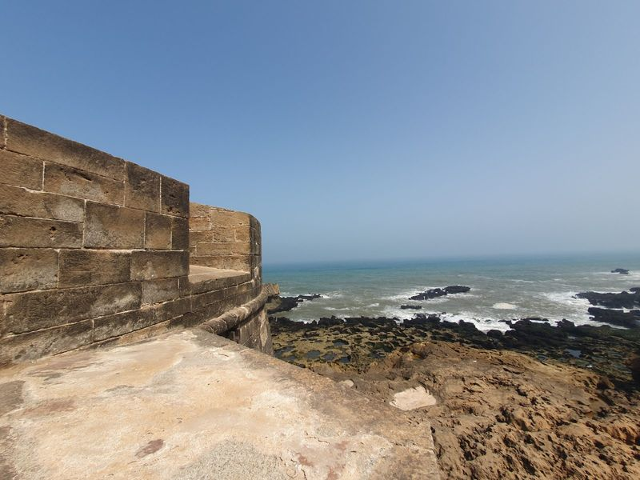
Порт, мури, равлики
Біло-синє портове місто. Рибу обираєте просто з ящика на ринку, а до неї babbouche, вуличний суп із равликів. Більшість не наважується; більшість тих, хто наважився, бере другу порцію. Ночуємо в ріаді всередині мурів.
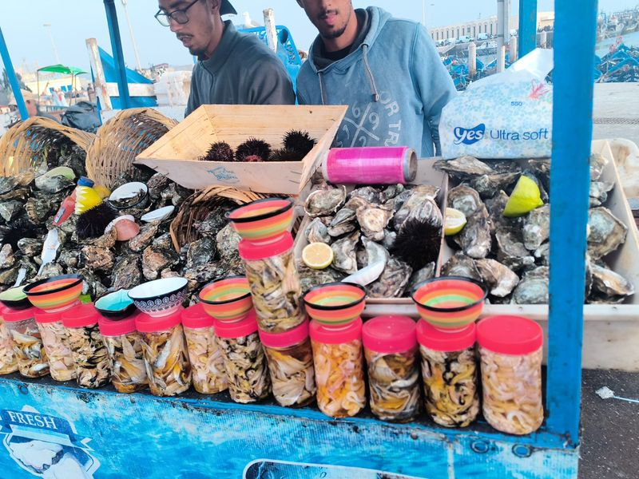
День про іслам
Мечеть Хасана II з мінаретом 210 метрів над Атлантикою, одна з небагатьох у Марокко, куди пускають немусульман; екскурсію ми забронювали. До того година пояснень: що таке пʼять стовпів і чому лунає заклик до молитви. Увечері наметовий табір біля лагуни Мержа-Зерга.
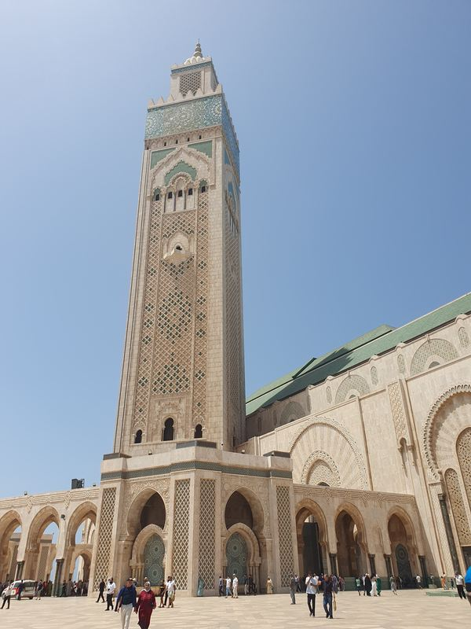
Синє місто без натовпів
Від лагуни звивистою дорогою в гори Риф. Приїжджаємо на захід сонця, а вранці сині вулички належать лише нам, поки не приїдуть автобуси.
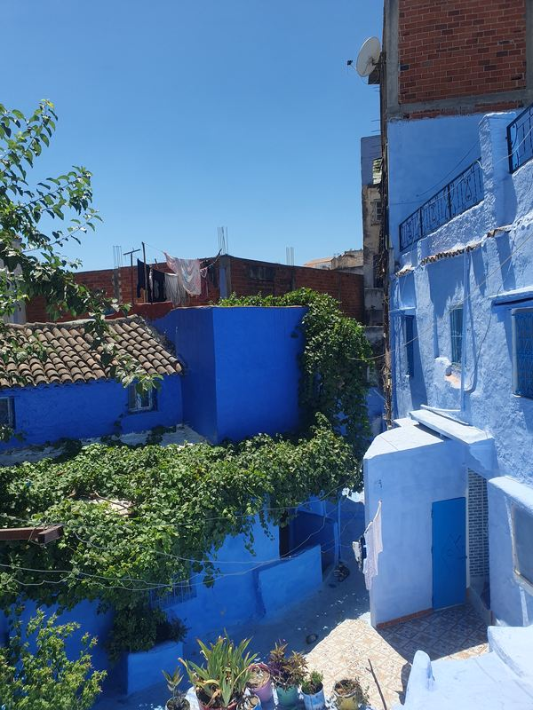
Ночуємо всередині медини
Дорогою священне містечко Мулай-Ідріс і римські мозаїки Волюбіліса в пообідньому світлі. Далі дві ночі в ріаді просто в медині Феса: девʼять тисяч вуличок, цілий день із місцевим гідом, чинбарні Шуара і хаммам увечері.
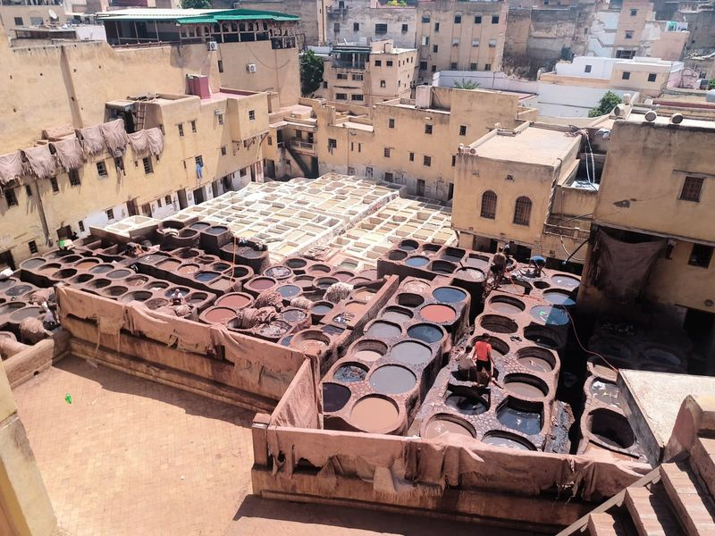
Кедри, мавпи і ніч у горах
Кедровий ліс із дикими мавпами маготами, мʼятний чай у гірському Іфрані й ночівля в Мідельті на висоті 1500 метрів. Найспокійніший день другої половини подорожі; теплий шар одягу дістаємо саме сьогодні.
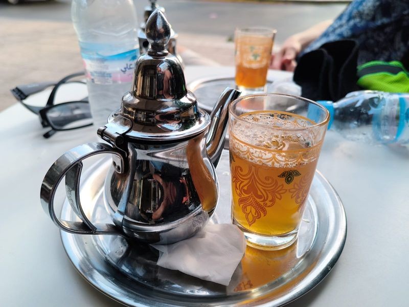
Увечері вʼїжджаємо в пустелю
Ущелина Зіз і глиняні ксари дорогою на південь. До табору в дюнах вирушаємо перед заходом сонця: на верблюді або на квадроциклі з інструктором, вибір за вами, ціна однакова. Вечеря біля вогню і ніч під зорями.
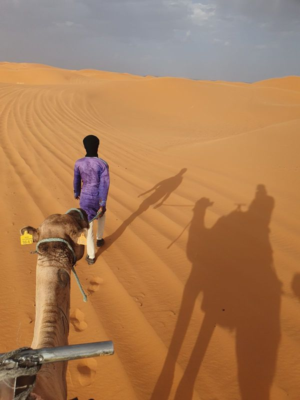
Схід сонця, ринок кочівників і власний трилобіт
Схід сонця над дюнами і верблюди назад. Недільний ринок у Ріссані, куди зʼїжджається вся округа, і поля біля Альніфа, де місцеві дадуть вам молоток: хто знайде скамʼянілість віком 400 мільйонів років, везе додому те, чого не купиш. Ночуємо в таборі в долині Драа.
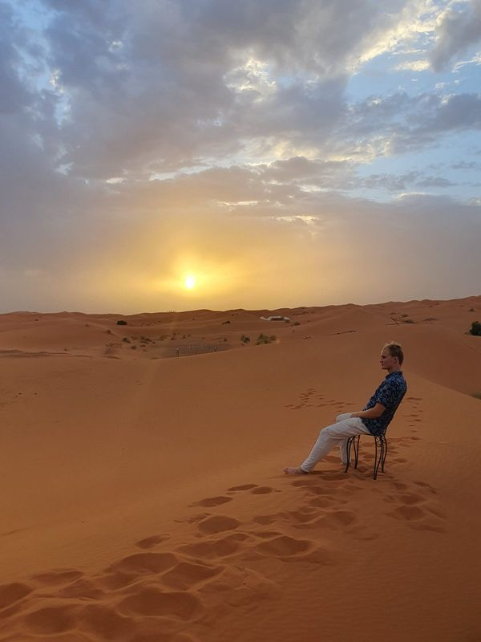
Велике фінале
Долина Драа, глиняний Аїт-Бен-Хадду, відомий із «Гладіатора», і перевал Тізі-н-Тішка. Два дні в Марракеші: медина з місцевим гідом, великі закупи та хаммам. Пʼятнадцятого дня рано-вранці виліт додому.
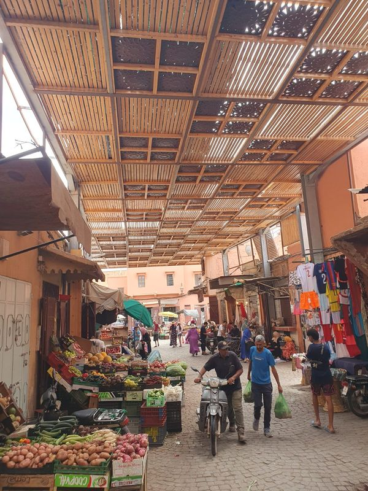
Каркас програми твердий: ночівлі та оплачені входи не змінюються. Але всередині дня є простір: якщо на ринку зайшла розмова, ми нікуди не поспішаємо.
Шукачі пригод, а не туристи
Турист приїздить, щоб відмітити пункти списку, і їде з фотографіями місць, де насправді ніколи не був. Ми їдемо країну прожити, навіть ціною меншого комфорту.
Скамʼянілість, куплена в магазині та загорнута в целофан.
Молоток від марокканця і трилобіт, якого ви викопаєте власними руками.
Риба зі шведського столу в готелі.
Риба, яку ви оберете з ящика на ринку в Ес-Сувейрі й вам засмажать на місці.
Готель із басейном на околиці міста.
Ріад усередині медини. Вранці виходите з дверей просто у девʼять тисяч вуличок.
Де ночуємо і що їмо
Де можливо, орендуємо цілий ріад або невеликий готель лише для нашої групи: жодних чужих людей, увечері внутрішній двір наш. Ночуємо у спільних дво- та чотиримісних кімнатах; хто їде сам, живе з кимось тієї самої статі без доплати. Три ночі спимо в наметах: одну біля лагуни на узбережжі, одну в дюнах Ерг-Шеббі та одну в долині Драа. Це не європейський готельний стандарт. Це краще: це справжнє Марокко.
Харчування входить у ціну весь час: сніданки, обіди та вечері. Їмо там, де їдять місцеві: таджин, кускус, харіра, риба просто з ринку. Вегетаріанський чи інший варіант організуємо, якщо знаємо заздалегідь. Самі оплачуєте лише алкоголь.
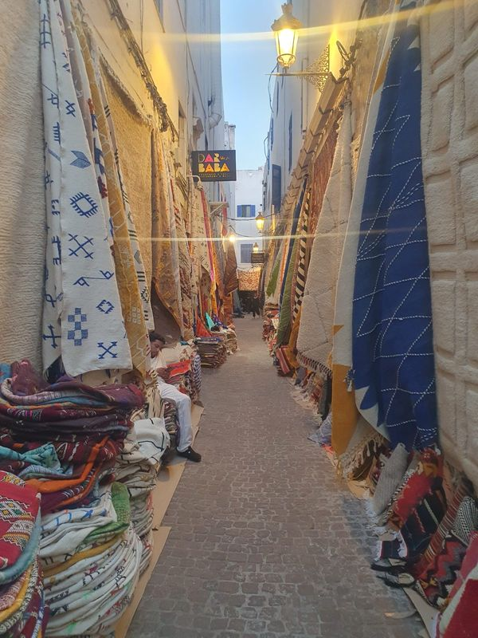
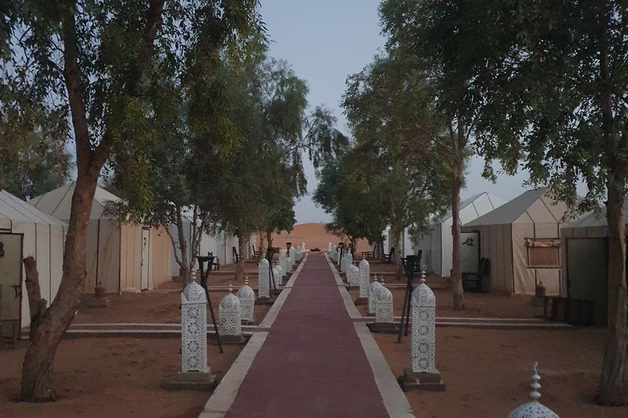
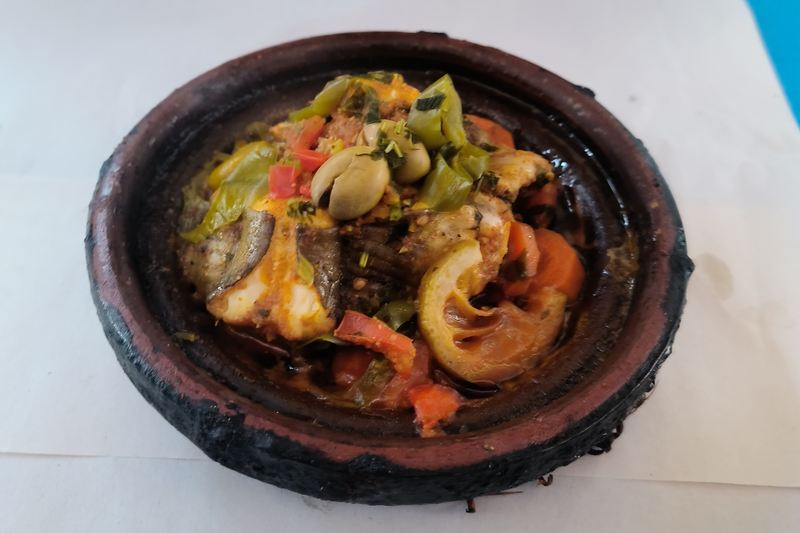
Хто поїде з вами
Cesta dobrodruha народилася з подорожі, коли ми проїхали Марокко самотужки, без турагенції та без каталожного маршруту. Це була одна з найсильніших подорожей у нашому житті. І ми зрозуміли: більшість людей, які хотіли б того самого, самі туди ніколи не виберуться. Тож відвеземо їх ми.
Гідів двоє навмисно: один веде програму, другий дбає про людей. Якщо хтось захворіє, один їде з ним до лікаря, а другий продовжує з групою. Ви ніколи не залишитесь без допомоги.
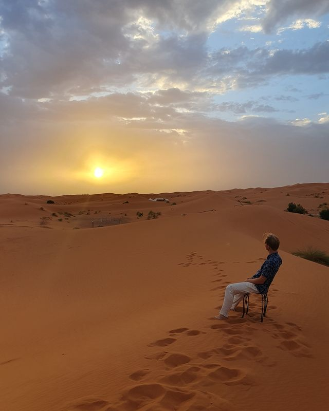
Zdeněk Tejkl
КЕРІВНИК ЕКСПЕДИЦІЇОбʼїздив 31 країну, у пʼятьох із них жив, зокрема в Ліберленді. Англійська на рівні C2, основи французької, іспанської та македонської; студент економіки. Серед найбільших пригод: індійське весілля в Джайпурі та подорож автостопом із Праги до Іспанії.
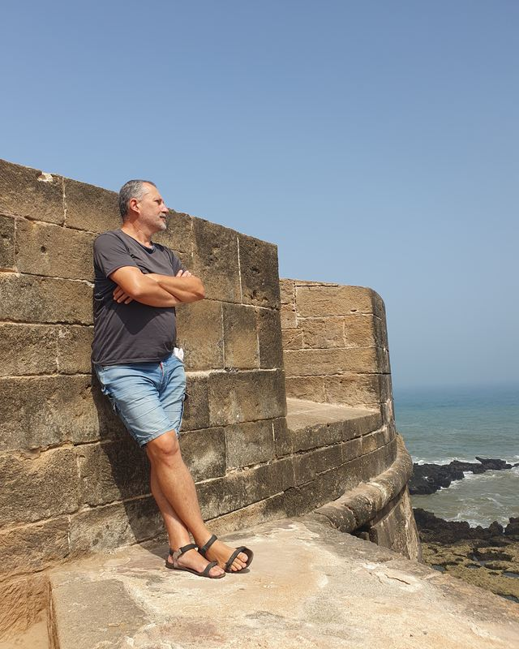
Miroslav Žák
ВОДІЙ І ТУРБОТА ПРО ГРУПУЇде з нами як водій і другий гід. Колишній поліцейський, обʼїздив понад 70 країн; найбільше полюбив Шрі-Ланку.
Пільгова ціна діє при бронюванні до 1. 9. 2026, далі 75 000 CZK. Завдаток 25 000 CZK одразу при бронюванні, доплата до 28. 9. 2026.
Входить у ціну
- авіаквиток туди й назад із таксами та реєстрованим багажем
- 14 ночей (ріади, готелі, 3 ночі в таборі)
- повний пансіон: сніданки, обіди, вечері
- власний мікроавтобус із водієм
- двоє чеських гідів
- ліцензовані місцеві гіди у Фесі та Марракеші
- усі вхідні квитки з програми
- курс серфінгу зі спорядженням
- верблюди, квадроцикли та сендбординг
- хаммам (традиційна марокканська лазня)
- медичне страхування
Не входить у ціну
- алкоголь
- страхування від скасування (радимо, оформимо)
- чайові
- власні покупки
- окрема кімната (за запитом)
Жодних обовʼязкових доплат на місці. Жодних «факультативних екскурсій», без яких програма не мала б сенсу. Що є в програмі, те оплачено. І за одномісне розміщення в нас не доплачують.
ЗАВДАТОК ДО 20. 9. ПОВЕРТАЄМО ПОВНІСТЮ
Завдаток до 20. 9. повертаємо повністю. Без зайвих питань.
Передумаєте до 20 вересня? Повернемо всі 25 000 CZK протягом семи днів, без пояснення причин. До того часу не витратимо із завдатку жодної крони.
Дзвінок, якщо хочете
Маєте додаткові питання? Залиште їх у формі внизу сторінки, і протягом 24 годин ми зателефонуємо. Хто вже вирішив, переходить одразу до заявки.
Анкета і завдаток
Кнопка «Хочу поїхати» відкриє анкету. Заповнюєте її та сплачуєте завдаток 25 000 CZK; до 20. 9. повертаємо його повністю, доплата до 28. 9.
Документи
Далі отримаєте всі матеріали: ваше страхування, детальну програму, рекомендований список речей та інше.
Знайомство групи
Онлайн познайомитеся з рештою учасників, щоб компанія зійшлася ще до вильоту.
Виїзд
А далі вирушаємо. Наступна зупинка: Марокко.
Чи це для вас?
Їдьте, якщо…
- ви вже обʼїхали Європу і хочете чогось сміливішого, але не зовсім самі
- їдете самі й не проти спільної кімнати
- хочете побачити, як люди справді живуть, а не лише памʼятки
- спокійно сприймаєте, що план інколи змінюється
- вам цікаві їжа, віра, ремесла й люди
Не їдьте, якщо…
- хочете лежати біля басейну з all inclusive
- вам потрібен незмінний розклад щогодини
- не переносите спеку, пил і довгі переїзди
- очікуєте європейський готельний стандарт
- не хочете поважати місцеві звичаї в одязі та поведінці
Пишемо це не для суворості. Пʼятнадцять днів в одному мікроавтобусі це довго, тому з кожним перед подорожжю знайомимося особисто. Ви поїдете не з випадковими людьми, а з тими, хто обрав цю подорож із тієї самої причини, що й ви.
Про що питають найчастіше
Навпаки, саме для вас ми це й робимо. Більшість групи їде сама. Поселимо вас із кимось тієї самої статі в такій самій ситуації, і за окреме ліжко доплачувати не треба. Пʼятнадцять днів в одному мікроавтобусі роблять своє; більшість груп наприкінці стають компанією.
Так. Експедиція йде переважно чеською, яка українцям здебільшого зрозуміла, а керівник групи володіє англійською на рівні C2 і перекладе все потрібне, від інструктажу до торгів на ринку. Перед бронюванням зателефонуйте нам, і ми чесно скажемо, чи це вам підійде.
Це не спортивне випробування. Ходимо по нерівній бруківці та піску, вдень близько 25 °C. Найважчий шостий день: переїзд через Касабланку до табору біля лагуни займає в авті близько семи годин. Кажемо про це заздалегідь; краєвиди дорогою того варті.
Марокко найстабільніша туристична країна Північної Африки. Їздимо власним мікроавтобусом із водієм, якого знаємо, ціни домовлені заздалегідь, а в мединах ходимо з ліцензованими гідами. Гідів двоє, тож група ніколи не лишається без супроводу, і ми на звʼязку цілодобово.
Ріади чисті й доглянуті, але не чекайте мережевого готелю: ванні кімнати часто спільні на кімнату, гаряча вода іноді набігає не одразу. Три ночі спимо в наметах зі спальниками. Пʼємо лише бутильовану воду. Це частина подорожі, а не її вада.
Медичне страхування входить у ціну. Маємо список перевірених лікарів на маршруті та копії всіх документів. Якщо стане гірше, один гід їде з вами, а другий залишається з групою.
Удень приємно, близько 25 °C. У пустелі та в горах уночі опускається нижче десяти градусів; теплий шар одягу обовʼязковий пункт у списку, який ви від нас отримаєте.
Стандарт це спільна кімната без доплати. Хто хоче бути сам, скаже нам, і ми порахуємо доплату залежно від житла.
До 20. 9. повертаємо завдаток повністю без пояснення причин. Після цієї дати діють умови скасування за загальними умовами; радимо страхування від скасування, яке ми одразу оформимо.
Харчування та програма оплачені. Розраховуйте на гроші для алкоголю, сувенірів і чайових. Конкретні поради, зокрема щодо обміну грошей, отримаєте в інфопакеті за три тижні до вильоту.
Хочете програму день за днем?
Надішлемо детальний маршрут у PDF: час, переїзди, ночівлі та що взяти з собою.
ЖОДНИХ РОЗСИЛОК · ЛИШЕ ПРОГРАМА ТА МАКСИМУМ 2 НАГАДУВАННЯ ПРО ДАТУ
Надіслано. Програма буде на пошті за кілька хвилин. Якщо не прийде, перевірте теку зі спамом.
Маєте питання? Ми зателефонуємо.
Залиште питання і номер телефону. Протягом 24 годин зателефонуємо, розберемо ваші питання й чесно скажемо, чи підходить вам ця експедиція. Дзвінок ні до чого не зобовʼязує.
Уже вирішили? Одразу заповніть заявку.
ВИЛІТ ПРАГА · 28. 10. 2026 · ПОВЕРНЕННЯ 11. 11. 2026Дякуємо, звʼяжемося протягом 24 годин.
Зателефонуємо з номера +420 702 967 187. Збережіть його, щоб знати, що це ми. Якщо тим часом вирішите, одразу заповніть заявку.